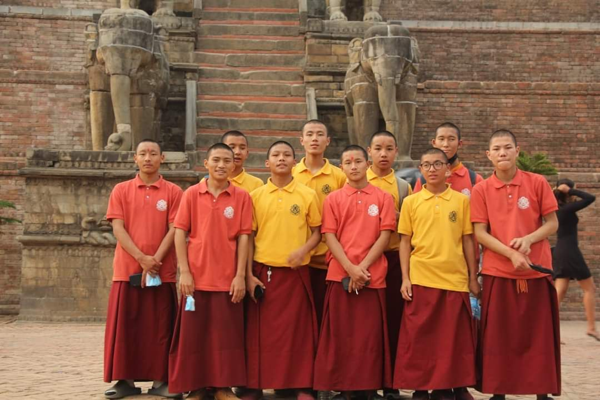
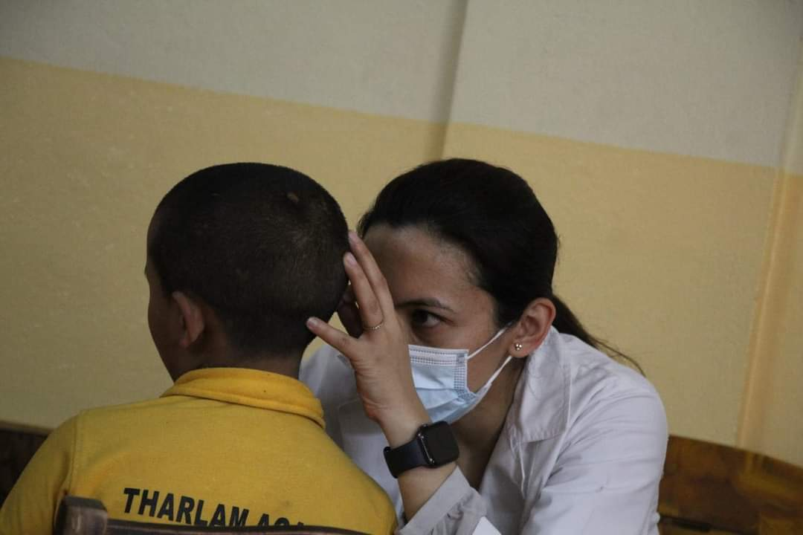
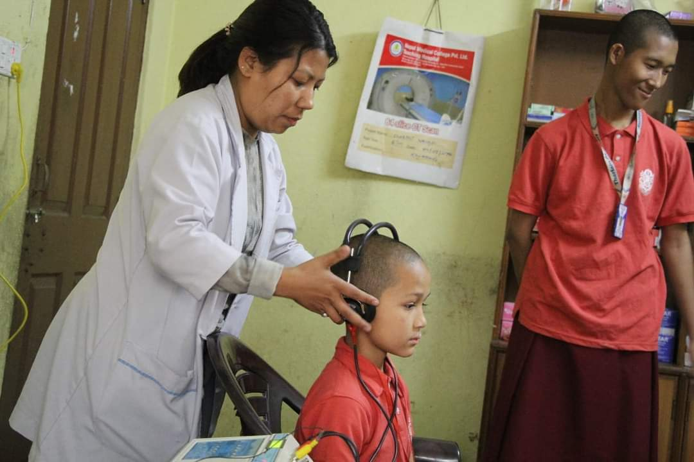
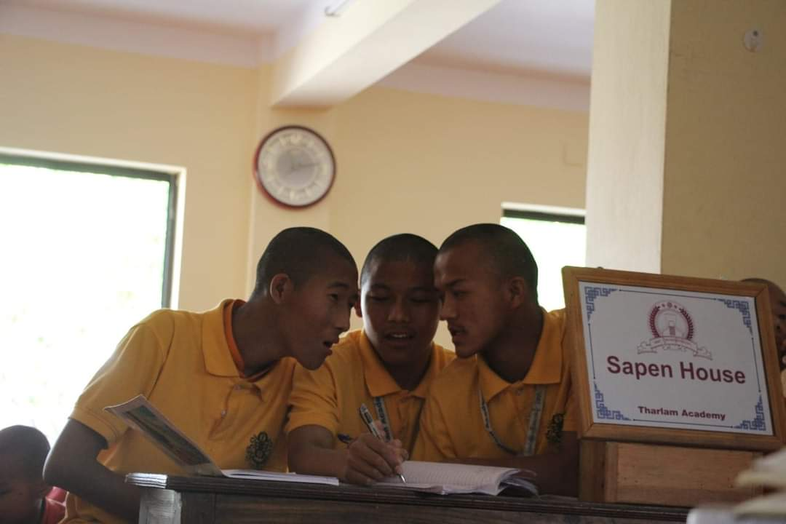
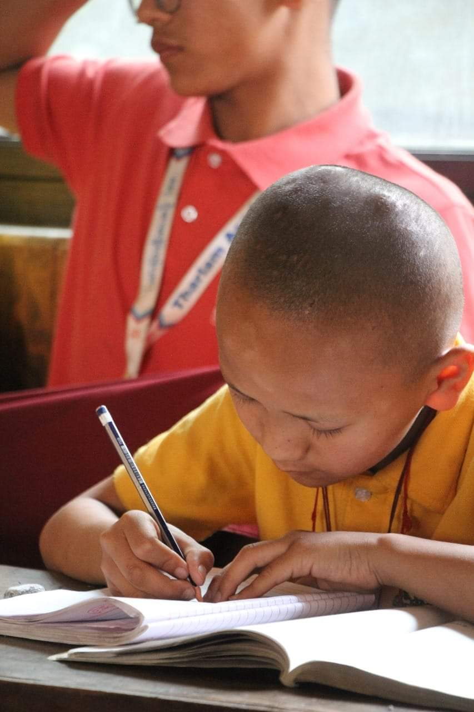

Welcome everyone.

I'm sherpa lama.I'm a monk of Tharlam monestery.I'm going to explain you about Tharlam family.
It is a picture of our team.we are working for creating web and it's been like six days by working in this project.
I will explain you about Tharlam family.

It is our monestery. It is located at boudha,phulbari.It was established in 1436,Ga Rabjampa kunga yeshi.we also have another Tharlam Monestery in tibet.
which is the part of our Tharlam Monestery.There are five buildings in Tharlam Monestery.
 
Health is most important thing in every people life so we have to protect our life.And if we talk about health facilities in tharlam then it is so good.There is one clinic and one nurse who is available everyday and also every students check there five senses 3 time in a year.we also have emergency vehicles.
 
we also have good education system in Tharlam family like we have nine subjects which are english,neapli,math,social,tibetan,science,computer,buddhist and health science.
since, seven days classes is little boring for every students because of that our school planed to do activities like co-curricular activities and as well as extra- curricular activities.
More about tharlam family
web creater